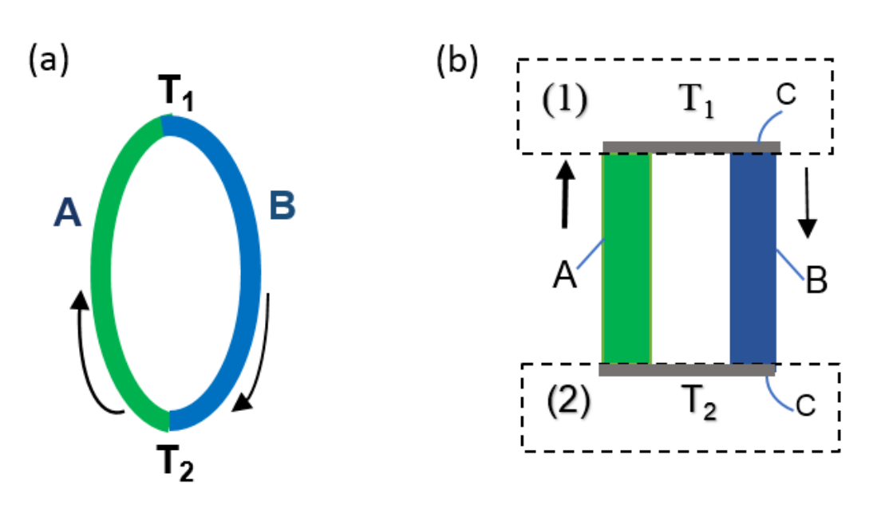
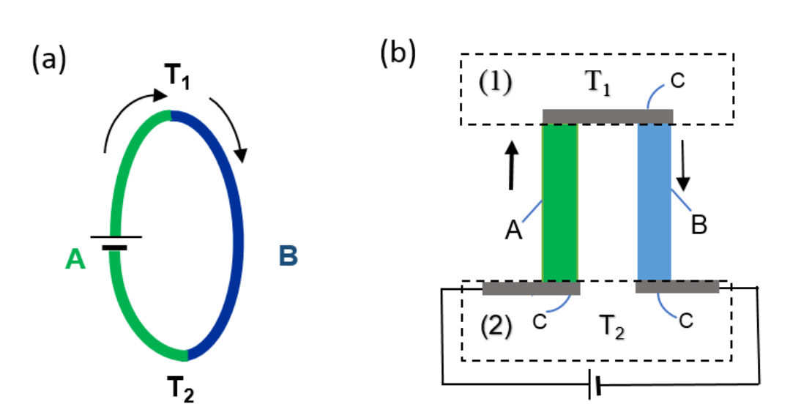
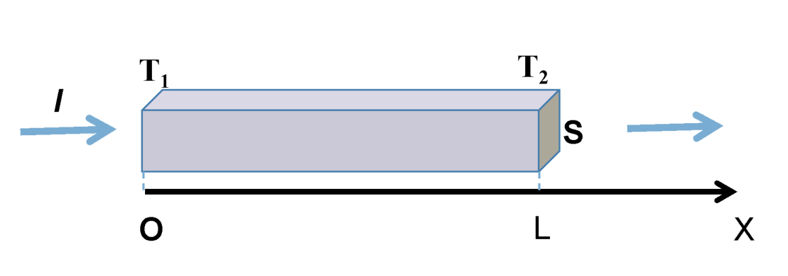
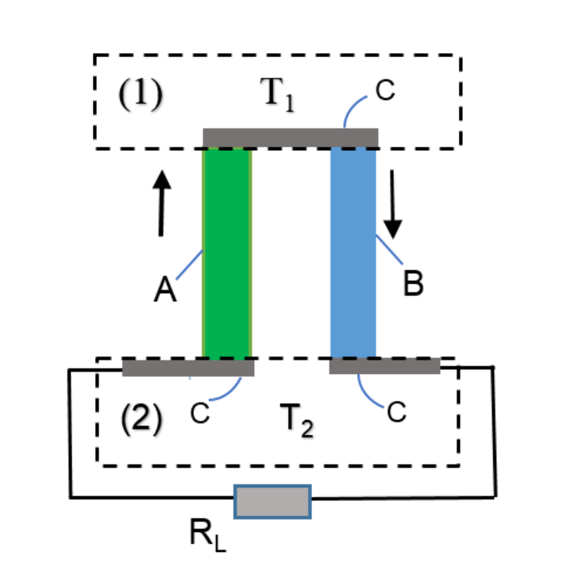
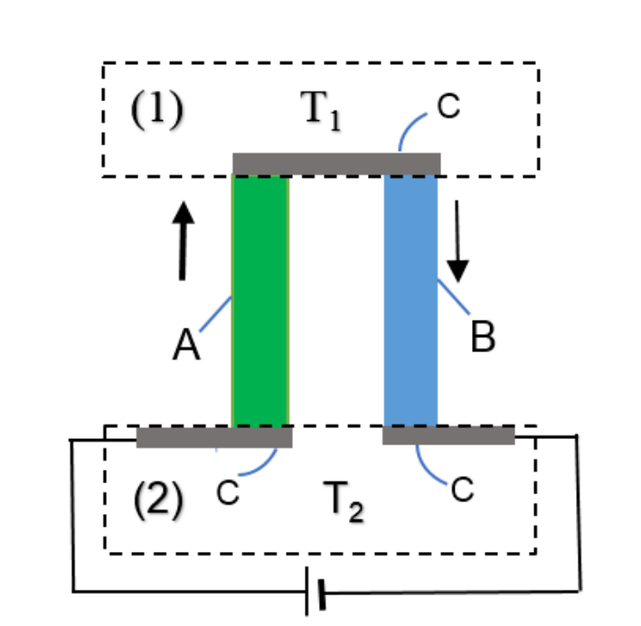

Thermoelectric effects and their applications in thermoelectric generator and refrigerator (10 pt)
Introduction: Thermoelectric effects
Thermoelectric effects in conducting materials are due to the interplay between heat current and electrical current. In this problem we consider only three predominant thermoelectric effects, namely the Joule, the Seebeck and the Peltier effects, neglecting the others.
The Joule effect is a consequence of the interaction between electrical carriers and crystal lattice. Moving directionally in presence of electrical current, carriers transfer a part of their energy to the vibrating crystal lattice, and as a result the crystal is heated. The Joule effect is irreversible.
The Seebeck effect can be observed in a thermocouple consisting of two dissimilar conducting bars A and B connecting by direct junction (Fig. 1a) or junction via an intermediate material C (Fig. 1b). The material C is good electrical conductor with very small specific heat. When the two junctions of the thermocouple are maintained at different temperatures and (Fig. 1a,b) the Seebeck electromotive force (emf) is produced
\epsilon = \alpha(T_1 - T_2) \tag{1}
where is the Seebeck coefficient of the thermocouple. is considered temperature independent. The Seebeck effect is applied in thermoelectric generator to convert heat energy into electrical one.

Figure 1. (a) direct junctions. (b) junctions via an intermediate material C. (1) Heat source (temperature ); (2) Heat sink (temperature ).
The Peltier effect
Whenever current passes through a thermocouple circuit consisted of two dissimilar conductors A and B with direct junctions (Fig. 2a) or junctioned via intermediate conductor C (Fig. 2b), depending on the current direction, heat is either absorbed or released at the junctions of the two conductors. This is the Peltier effect. The Peltier heat power appeared at a junction is
q = \pi I \tag{2}
is the Peltier coefficient of this junction. The Seebeck and Peltier effects are reversible effects in contrast to the irreversible Joule effect. Although the Seebeck and Peltier effects need junctions between the thermoelements, they are essentially bulk effects. A closed electrical cycle in a thermocouple with the Peltier effect (Fig. 2b) can be used as a refrigerator when heat is removed from one isolated junction and rejected at the other.
For simplicity, the heat radiation, circulation, conduction through surrounding environment are considered negligible, and heat current is supposed to be inside the thermocouple and at the heat source and the heat sink.

Figure 2. (a) Direct junctions; (b) junctions via an intermediate material C.
Data for thermal and electrical properties of materials and the thermocouple studied in this problem are given in the Table 1 and 2 for numerical calculation.
| Name | Material | Resistivity (m) | Thermal conductivity (WmK) |
|---|---|---|---|
| A | BiTeSe | 1.4 | |
| B | BiSbTe | 1.4 |
Table 1: Parameters of materials used in thermocouple (at room temperature)
| Thermocouple AB | Length (m) | Seebeck’s coefficient (VK) |
|---|---|---|
| 0.02 | 420 |
Table 2: Parameters of the thermocouple.
A. Heat transfer and thermoelectric generator
A1. Heat transfer in a homogeneous conducting bar
An electric current (Figure 3) flows along a homogeneous conducting bar with length , resistivity , thermal conductivity . The two ends of the bar are located at coordinates and in the OX axis. The temperature at is , at is (), both temperatures are kept constant.

Figure 3
The heat current (the amount of heat transferred via perpendicular cross-section per unit time) flowing in the bar is described by the Fourier law
q(x) = -kS\frac{dT(x)}{dx} \tag{3}
here is thermal conductivity, and is the cross-sectional area of the bar.
A1.1 (0.75pt) Find the temperature distribution when varies along the bar at the steady state assuming no heat loss to the surroundings. Hint: the equation has the solution , where and are derived from boundary conditions.
A1.2 (1.0pt) Find the heat current at point and , at the two ends, respectively.
A2. Relation between Peltier and Seebeck Coefficients
Relation between Peltier and Seebeck coefficients for all temperature range is generally proved in thermodynamics. Here, this relation is derived for the particular case when the thermocouple is made of conducting materials A and B (Fig. 1b) with the Seebeck coefficient and small-enough resistivity so that the Joule effect can be neglected. The Peltier coefficients at the hot (temperature ) and cold (temperature ) junctions are and correspondingly. During electrical process, the electron gas in the thermocouple performs a ideal thermodynamic cycle.
A2.1 (0.25pt) Find the expression for the heat current received by the electron gas from the heat source with temperature .
A2.2 (0.25pt) Find the expression for the heat current transferred by the electron gas to the heat sink with temperature .
A2.3 (0.5pt) Find the net electrical power produced by the electron gas if the Seebeck coefficient is .
A2.4 (0.5pt) Express the Peltier coefficient at a junction in term of the Seebeck coefficient and the temperature of the junction.
A3. Thermoelectric generator

Figure 4. Thermoelectric generator. (1) Heat source (temperature ); (2) Heat sink (temperature ).
Hereafter the Peltier coefficient is taken to be equal to for all temperatures and the Joule heat must be included in consideration.
The thermocouple consisting of two conducting bar A and B with equal length is used as thermoelectric generator (Fig. 4). The parameters of the bars A and B are: cross-sectional areas , ; resistivities , ; thermal conductivities , . The lower ends of the A and B bars are connected to a load of resistance . Parameters of the thermocouple are: the Seebeck coefficient, the internal resistance, the thermal conductance. The upper hot end (lower cold end) of the thermocouple is maintained at temperature () and . Denote as the heat power taken from the heat source with temperature , as the heat power transferred to the heat sink with temperature by the thermocouple.
A3.1 (0.5pt) Find the expressions for , in terms of the thermocouple parameters , , , the temperatures , and the current .
The efficiency of the thermoelectric generator is defined as , where the electrical power of the load. The ratio between the load and internal resistances of the thermocouple is denoted as .
A3.2 (0.75pt) Find the expression for the efficiency in terms of the thermocouple parameters , , , the temperatures , and the resistance ratio .
In order to determine the efficiency of thermoelectric generators, the following properties of the thermocouple are needed: low electrical resistance to minimize Joule heating, low thermal conductivity to retain heat at the junctions, and a maintained large temperature gradient. These three properties are put together in one quantity , which is called the figure-of-merit of the thermocouple.
A3.3 (0.25pt) Find the expression for the efficiency in terms of , the ideal Carnot cycle efficiency , and .
A4. The maximum efficiency
The efficiency of the thermocouple equals when the electric power of the load takes the maximum value, .
A4.1 (0.25pt) Find the expression for the in terms of the figure of merit , , and .
The efficiency is maximum when the resistance ratio takes some value which is denoted by .
A4.2 (0.75pt) Find the expression for in terms of , , and .
A4.3 (0.25pt) Express the maximum efficiency via , , and .
A5. The maximum figure of merit
Increasing the figure of merit of the thermocouple leads to the increase of the efficiency of the thermoelectric generator. In practice, the cross-sectional areas , of the bars of the thermocouple are choosen so that the figure of merit of the thermocouple has maximum value .
A5.1 (0.5pt) Derive the expression for the ratio between the cross-sectional areas of the bars in terms of , , , when the figure of merit of the thermocouple is maximum.
A5.2 (0.25pt) Express the maximum figure of merit in term of , , , , .
A6. The optimum efficiency
The optimum efficiency of the thermolectric generator is defined as the efficiency when the electric power at the load and the figure of merit both are at the maximum values. The hot heat source and cold heat sink are maintained at temperatures K, K respectively.
A6.1 (0.5pt) Find the numerical value of the thermoelectric generator made from materials with parameters given in Table 1 and compare it with the ideal efficiency .
A6.2 (0.25pt) Find the numerical value of the maximum efficiency of the thermoelectric generator made from given materials.
B. Thermoelectric refrigerator
The thermocouple with parameters , , given in the question A3 is used as a thermoelectric refrigerator and described in the Fig. 5.
B1. The cooling power and the maximum temperature difference
The upper end of the thermocouple is a heat source with the initial temperature . It is thermally isolated with ambient environment, and needs to be cooled. The lower ends of the thermocouple, A and B bars are connected to a battery and are at the temperature of the heat sink. The sense of the electrical current is chosen so that the Peltier heat is absorbed at the upper junction and released to the heat sink at the lower junction.

Figure 5. Thermoelectric refrigerator. (1) Isolated heat source (temperature ); (2) Heat sink (temperature ).
B1.1 (0.25pt) Find the expression for the cooling power (heat current flows from the heat source to the bars of the thermocouples) in terms of the thermocouple parameters , , and , , .
B1.2 (0.5pt) Find the expression for the maximum temperature difference in term of the figure of merit of the thermocouple and the lowest temperature of the isolated heat source .
B2. The working current
The thermocouple made from materials A and B with best value of figure of merit found in part A is used for the refrigerator.
B2.1 (0.25pt) Calculate the numerical value of the minimum temperature of the isolated heat source if the temperature of the heat sink is K.
B2.2 (0.5pt) Calculate the working current intensity of the thermoelectric refrigerator when the temperature of the heat source is at the minimum value and the temperature of the heat sink K. For simplicity the cross-sectional areas of the bars are taken to be equal, m.
B3. The coefficient of performance
When the temperature difference is less than its maximum value , the coefficient of performance is usually used for assessing of the performance of the thermoelectric refrigerator. , where is the supplied electrical power.
B3.1 (0.5pt) Find the expression for the coefficient of performance in terms of the parameters , , of the thermocouple and , , .
When the coefficient of performance has its maximum value , the current intensity is .
B3.2 (0.25pt) Find the expression for in terms of the parameters , , of the thermocouple and temperatures , .
B3.3 (0.25pt) Find the expression for the maximum coefficient of performance .
Fonte: Testo (PDF) — p.1
Topic: Thermodynamics, Circuits Metodi: First Law of Thermodynamics, Thermodynamic Cycle Analysis, Differential Equations, Kirchhoff’s Laws Competenze: Mathematical Modeling, Physical Reasoning Objects: Battery, Resistor
Effetti termoelettrici e loro applicazioni nel generatore e frigorifero termoelettrici (10 pt)
Introduzione: Effetti termoelettrici
Gli effetti termoelettrici nei materiali conduttori sono dovuti all’interazione tra corrente termico e corrente elettrica. In questo problema consideriamo solo tre effetti termoelettrici predominanti, vale a dire gli effetti Joule, Seebeck e Peltier, ignorando gli altri.
L’effetto Joule **** è una conseguenza dell’interazione tra i portanti elettrici e la rete cristallina. Se si muove in direzione in presenza di corrente elettrica, i portatori trasferiscono una parte della loro energia alla rete di cristallo vibrante, e di conseguenza il cristallo viene riscaldato. L’ effetto Joule è irreversibile.
The Seebeck effect can be observed in a thermocouple consisting of two dissimilar conducting bars A and B connecting by direct junction (Fig. 1a) o un’incombinazione attraverso un materiale intermedio C (Fig. 1b). Il materiale C è un buon conduttore elettrico con un calore specifico molto piccolo. Quando le due unioni del termoparte sono mantenute a temperature diverse e (Fig. 1a, b) si produce la forza elettromotrice Seebeck (emf)
\epsilon = \alpha(T_1 - T_2) \tag{1}
dove è il coefficiente Seebeck del termopare. è considerato indipendente dalla temperatura. L’effetto Seebeck viene applicato nel generatore termoelettrico per convertire l’energia termica in energia elettrica.
Figura 1. (a) giunzioni dirette. b) le unioni attraverso un materiale intermedio C. (1) Fonte di calore (temperatura ); (2) Sciacquatore di calore (temperatura ).
L’effetto Peltier
Ogni volta che il corrente passa attraverso un circuito termopare consisteva in due conduttori diversi A e B con giunzioni dirette (Fig. 2a) o collegati attraverso un conduttore intermedio C (Fig. 2b), a seconda della direzione corrente, il calore viene assorbito o rilasciato nelle unioni dei due conduttori. Questo è l’effetto Peltier. La potenza termico di Peltier apparsa in una giunzione è
q = \pi I \tag{2}
è il coefficiente di Peltier di questa giunzione. Gli effetti Seebeck e Peltier sono effetti reversibili, in contrasto con l’effetto Joule irreversibile. Sebbene gli effetti Seebeck e Peltier richiedano un collegamento tra gli elementi termoelementi, sono essenzialmente effetti a granellamento. Un ciclo elettrico chiuso in un termopare con effetto Peltier (Fig. 2b) può essere utilizzato come frigorifero quando il calore viene rimosso da una giunzione isolata e respinto dall’altra.
Per semplicità, la radiazione di calore, la circolazione, la conduzione attraverso l’ambiente circostante sono considerate trascurabili, e la corrente di calore dovrebbe essere all’interno del termopare e alla fonte di calore e al dissipatore di calore.
Figura 2. (a) Giunzioni dirette; (b) Giunzioni attraverso un materiale intermedio C.
Per il calcolo numerico, i dati sulle proprietà termiche ed elettriche dei materiali e della termoparta studiata in questo problema sono riportati nelle tabelle 1 e 2.
| Name | Material | Resistivity (m) | Thermal conductivity (WmK) |
|---|---|---|---|
| A | BiTeSe | 1.4 | |
| B | BiSbTe | 1.4 |
**Tabella 1: ** Parametri dei materiali utilizzati nella termoparta (a temperatura ambiente)
| Thermocouple AB | Length (m) | Seebeck’s coefficient (VK) |
|---|---|---|
| 0.02 | 420 |
**Tabella 2: ** Parametri della termopoppia.
A. Trasferimento di calore e generatore termoelettrico
A1. Trasferimento di calore in una barra di conduttore omogenea
Un corrente elettrica (Figura 3) scorre lungo una barra di conduttore omogenea con lunghezza , resistività , conducibilità termica . Le due estremità della barra sono situate alle coordinate e nell’asse OX. La temperatura a è , a è (), entrambe le temperature sono mantenute costanti.
Figura 3
La corrente termico (la quantità di calore trasferita per sezione perpendicolare per unità di tempo) che scorre nella barra è descritta dalla legge di Fourier
q(x) = -kS\frac{dT(x)}{dx} \tag{3}
Qui è la conducibilità termica e è l’area trasversale della barra.
A1.1 *(0,75pt) * Trova la distribuzione della temperatura quando varia lungo la barra allo stato di stabilità, purché non si perda calore per l’ambiente circostante. Suggerimento: l’equazione ha la soluzione , dove e sono derivate dalle condizioni di confine.
A1.2 *(1.0pt) * Trova la corrente termico rispettivamente nei punti e , alle due estremità.
A2. Relazione tra i coefficienti Peltier e Seebeck
La relazione tra i coefficienti Peltier e Seebeck per tutte le temperature è generalmente dimostrata nella termodinamica. Qui, questa relazione è derivata per il caso particolare in cui la termoparta è costituita da materiali conduttori A e B (Fig. 1b) con il coefficiente Seebeck e una resistività sufficientemente piccola da poter trascurare l’effetto Joule. I coefficienti di Peltier alle giunzioni calde (temperatura ) e fredde (temperatura ) sono rispettivamente e . Durante il processo elettrico, il gas elettronico nel termopare esegue un ciclo termodinamico ideale.
A2.1 *(0.25pt) * Trova l’espressione della corrente di calore ricevuta dal gas elettronico dalla fonte di calore con temperatura .
A2.2 *(0.25pt) * Trova l’espressione della corrente termica trasferita dal gas elettronico al dissipatore termico a temperatura .
A2.3 *(0,5pt) * Trova la potenza elettrica netta prodotta dal gas elettronico se il coefficiente Seebeck è .
A2.4 *(0,5pt) * Esprimere il coefficiente Peltier in una giunzione in termini del coefficiente Seebeck e della temperatura della giunzione.
A3. Generatore termoelettrico
Figura 4. Generatore termoelettrico. (1) Fonte di calore (temperatura ); (2) Sciacquatore di calore (temperatura ).
In seguito il coefficiente Peltier è considerato uguale a per tutte le temperature e deve essere preso in considerazione il calore di Joule.
Il termocoppello costituito da due barre di conduttori A e B di uguale lunghezza è utilizzato come generatore termoelettrico (Fig. 4). I parametri delle barre A e B sono: aree di sezione trasversale , ; resistenze , ; conductività termica , . Le estremità inferiori delle barre A e B sono collegate ad un carico di resistenza . I parametri della termoparta sono: il coefficiente di Seebeck, la resistenza interna, la conduttività termica. La parte superiore della termoparta calda (la parte inferiore del termoparta freddo) è mantenuta a temperature () e . Indicare come potenza termica presa dalla fonte di calore a temperatura , come potenza termica trasferita al serbatoio a temperatura dalla termocoppia.
A3.1 *(0,5pt) * Trova le espressioni di , in termini di parametri di termopare , , , temperature , e corrente .
L’efficienza del generatore termoelettrico è definita come , dove è la potenza elettrica del carico. Il rapporto tra il carico e le resistenze interne della termoparta è indicato come .
A3.2 *(0.75pt) * Trova l’espressione per l’efficienza in termini di parametri del termoparte , , , le temperature , e il rapporto di resistenza .
Per determinare l’efficienza dei generatori termoelettrici, sono necessarie le seguenti proprietà del termopare: bassa resistenza elettrica per ridurre al minimo il riscaldamento di Joule, bassa conducibilità termica per trattenere il calore alle giunzioni e mantenere un grande gradiente di temperatura. Queste tre proprietà sono riunite in una quantità , che viene chiamata la figura di merito della termopara.
A3.3 *(0.25pt) * Trova l’espressione per l’efficienza in termini di , l’efficienza ideale del ciclo Carnot , e .
A4. L’efficienza massima
L’efficienza della termopoppia è pari a quando la potenza elettrica del carico raggiunge il valore massimo, .
A4.1 *(0.25pt) * Trova l’espressione per il in termini di figura di merito , e .
L’efficienza è massima quando il rapporto di resistenza assume un certo valore indicato da .
A4.2 *(0.75pt) * Trova l’espressione per in termini di , e .
A4.3 *(0.25pt) * Esprimere l’efficienza massima tramite , , e .
A5. Il valore massimo del merito
L’aumento della cifra di merito del termopare conduce ad un aumento dell’efficienza del generatore termoelettrico. In pratica, le aree di sezione trasversale , delle barre del termoparte sono scelte in modo che la figura di merito del termoparte abbia un valore massimo .
A5.1 *(0,5pt) * Derivare l’espressione per il rapporto tra le superfici di sezione trasversale delle barre in termini di , , , quando la figura di merito della termopara è massima.
A5.2 *(0.25pt) * Esprimere la cifra massima di merito in termini di , , , , .
A6. L’efficienza ottimale
L’efficienza ottimale del generatore termoelettrico è definita come l’efficienza quando la potenza elettrica al carico e la figura di merito sono entrambi al massimo. La fonte di calore caldo e il lavandino di calore freddo sono mantenuti rispettivamente a temperature K e K.
A6.1 *(0,5pt) * Trova il valore numerico del generatore termoelettrico realizzato con materiali con i parametri indicati nella tabella 1 e confrontale con l’efficienza ideale .
A6.2 *(0.25pt) * Trova il valore numerico dell’efficienza massima del generatore termoelettrico realizzato con determinati materiali.
B. Frigorifero termoelettrico
Il termopare con i parametri , , indicati nella domanda A3 è utilizzato come frigorifero termoelettrico e descritto nella figura. 5.
B1. Potenza di raffreddamento e differenza massima di temperatura
L’estremità superiore della termoparta è una fonte di calore con temperatura iniziale . È termicamente isolato dall’ambiente circostante e deve essere raffreddato. Le estremità inferiori della termocoppia, le barre A e B sono collegate a una batteria e sono a temperatura del disipadore termico. Il senso della corrente elettrica è scelto in modo che il calore di Peltier sia assorbito nella giunzione superiore e rilasciato al dissipatore di calore nella giunzione inferiore.
Figura 5. frigorifero termoelettrico. (1) Fonte di calore isolata (temperatura ); (2) Sciacquatore di calore (temperatura ).
B1.1 *(0,25pt) * Trova l’espressione per la potenza di raffreddamento (correnti di corrente di calore dalla fonte di calore alle barre dei termopari) in termini di parametri del termopari , , e , , .
B1.2 *(0,5pt) * Trova l’espressione per la differenza massima di temperatura in termini della figura di merito della termoparta e della temperatura più bassa della fonte di calore isolata .
B2. La corrente di lavoro
Per il frigorifero si utilizza la termoparta realizzata con materiali A e B con il miglior valore di valore della parte A.
B2.1 *(0,25pt) * Calcolare il valore numerico della temperatura minima della fonte di calore isolata se la temperatura del disipadore di calore è K.
B2.2 *(0,5pt) * Calcolare l’intensità di corrente di lavoro del frigorifero termoelettrico quando la temperatura della fonte di calore è al valore minimo e la temperatura del disipadore di calore K. Per semplificazione, le aree di sezione trasversale delle barre sono prese come uguali, m.
B3. Il coefficiente di prestazioni
Quando la differenza di temperatura è inferiore al suo valore massimo , il coefficiente di prestazioni viene solitamente utilizzato per valutare le prestazioni del frigorifero termoelettrico. , dove è la potenza elettrica fornita.
B3.1 *(0,5pt) * Trova l’espressione per il coefficiente di prestazione in termini di parametri , , della termopoppia e , , .
Quando il coefficiente di prestazione ha il suo valore massimo , l’intensità di corrente è .
B3.2 *(0.25pt) * Trova l’espressione per in termini di parametri , , della termoparta e temperature , .
B3.3 *(0.25pt) * Trova l’espressione per il coefficiente massimo di prestazione .
Fonte: Testo (PDF) — p.1
Topic: Thermodynamics, Circuits Metodi: First Law of Thermodynamics, Thermodynamic Cycle Analysis, Differential Equations, Kirchhoff’s Laws Competenze: Mathematical Modeling, Physical Reasoning Objects: Battery, Resistor